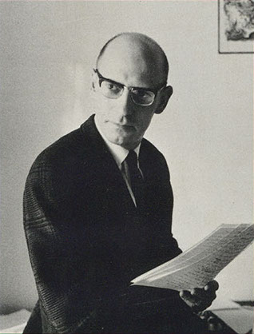
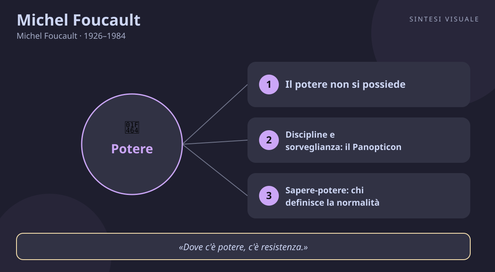

Home / Filosofi / Michel Foucault

Michel Foucault
Michel Foucault · 1926–1984
«Là dove c'è potere, c'è resistenza»
- Disciplina
- Sapere-potere
- Resistenza
- Cura di sé
💬La massima
«Là dove c'è potere, c'è resistenza.»
— Michel Foucault, La volontà di sapere. Storia della sessualità 1 (1976; trad. it. Feltrinelli, p. 84-85)
La frase completa dice di più: «Là dove c'è potere c'è resistenza e tuttavia, o piuttosto proprio per questo, essa non è mai in posizione di esteriorità rispetto al potere». Non significa "prima o poi qualcuno si ribella": significa che il potere non è una cosa che uno possiede e l'altro subisce, ma una relazione tra persone — e in ogni relazione c'è sempre un margine per dire di no, deviare, disobbedire.
Immaginala così: il potere non è un muro di cemento che ti cade addosso, è una rete di fili tesi tra le persone — scuola, ufficio, famiglia, social. Ogni filo tira da una parte, ma può essere tirato anche dall'altra: ogni punto della rete può diventare un punto di resistenza. Per questo Foucault aggiunge che la resistenza non sta "fuori" dal potere, in un mondo puro e incontaminato: sta dentro le stesse relazioni. Non esiste una vita senza rapporti di potere, ma non esiste nemmeno un potere senza crepe.
Attenzione a un equivoco: Foucault non sta facendo il tifo per la rassegnazione ("tanto il potere vince sempre") né per l'illusione ("basta uscirne fuori"). Sta dicendo una cosa pratica: se vuoi cambiare qualcosa, non cercare il grande pulsante del potere da premere una volta per tutte — il palazzo, il capo, il sistema. Cerca i mille piccoli punti dove il potere passa ogni giorno, perché è lì che puoi resistere davvero.
👤Biografia
Paul-Michel Foucault nasce il 15 ottobre 1926 a Poitiers, in Francia, da una famiglia di medici: il padre è un chirurgo stimato che vorrebbe per lui la stessa strada. Lui invece è inquieto, fragilissimo e geniale: al liceo eccelle ma soffre di depressione, tanto che dopo un periodo difficile il padre lo porta da uno psichiatra. Quell'incontro con la psichiatria — prima da paziente, poi da studioso — segnerà tutta la sua opera.
Entra alla prestigiosa École Normale Supérieure di Parigi, dove studia con i grandi nomi del Novecento francese e litiga con quasi tutti. Negli anni Cinquanta lavora come psicologo in manicomio, viaggia in Svezia, Polonia e Germania, e nel 1961 pubblica la tesi che lo rende famoso: la Storia della follia. Da lì una carriera fulminea: professore in Tunisia durante le rivolte studentesche del 1968, poi al Collège de France, la cattedra più prestigiosa del paese. Vita pubblica intensa: omosessuale dichiarato in un'epoca in cui non era scontato, militante per i diritti dei detenuti (fonda il Gruppo d'informazione sulle prigioni), giornalista in Iran durante la rivoluzione del 1978, protagonista dei dibattiti televisivi. Carattere magnetico e scontroso insieme: capace di riempire i teatri con le sue lezioni e di rompere amicizie storiche per una divergenza teorica. Muore a Parigi il 25 giugno 1984, tra i primi intellettuali francesi stroncati dall'AIDS, lasciando manoscritti che usciranno postumi.
📌Sintesi del pensiero
Per Foucault la domanda vera non è "chi comanda?", ma "come funziona il potere nella vita di tutti i giorni?". La sua risposta: il potere moderno non punisce più il corpo in piazza come i re di una volta, ma disciplina le persone dentro scuole, ospedali, fabbriche, uffici e algoritmi, definendo cosa è normale e cosa è malato, criminale o strano. Il sapere — medicina, psichiatria, diritto, statistica — non descrive la realtà da fuori: la costruisce, decidendo chi conta come persona perbene e chi no. Eppure, proprio perché il potere è ovunque, anche la resistenza può nascere ovunque.
🏛️I temi fondamentali
- Il potere non si possiede, si esercita. Il punto di partenza di tutto. Per Foucault il potere non è una corona che sta in testa al re o una cassaforte in mano ai ricchi: è qualcosa che circola nelle relazioni — tra medico e paziente, tra insegnante e alunno, tra capo e impiegato, tra piattaforma e utente. Come l'elettricità in una rete: nessuno "ha" la corrente, ma tutti ne sono attraversati. Per questo studiare il potere significa guardare le pratiche quotidiane, non solo i palazzi del governo.
- Discipline e sorveglianza: il Panopticon. In Sorvegliare e punire (1975) Foucault descrive la nascita della prigione moderna e di tutte le istituzioni che le somigliano: scuole, caserme, fabbriche, ospedali. Il modello è il Panopticon, il carcere progettato nel Settecento dove un unico sorvegliante può vedere tutti i detenuti senza essere visto. Risultato: i detenuti si comportano bene anche quando nessuno li guarda, perché potrebbero essere guardati. È la stessa logica del cartellino da timbrare, del registro di classe, del "visto" blu sui messaggi e della telecamera in ufficio: non serve punirti, basta farti sentire osservato e ti disciplini da solo.
- Sapere-potere: chi definisce la normalità. Medici, psichiatri, giudici, esperti: per Foucault non sono semplici tecnici neutrali, ma i veri legislatori del mondo moderno. Quando la medicina dell'Ottocento decide cosa è follia e cosa è ragionevolezza, quando la sessuologia cataloga i comportamenti "sani", quando la scuola misura l'intelligenza con i voti, il sapere produce la realtà: divide i normali dagli anormali, i curabili dagli inguaribili. La celebre formula è savoir-pouvoir, sapere-potere: ogni verità ufficiale nasconde una scelta su chi merita di essere ascoltato e chi va corretto, curato o rinchiuso.
- Biopolitica: il potere sulla vita. Nelle lezioni degli anni Settanta Foucault conia una parola destinata a enorme fortuna: biopolitica. Il potere moderno non chiede più ai sudditi di morire per il re in guerra, ma gestisce la loro vita: tassi di natalità, vaccinazioni, igiene, alimentazione, assicurazioni, statistiche sulla popolazione. Lo Stato conta, misura e ottimizza i corpi come si amministra un gregge produttivo. La pandemia, le campagne sanitarie, i bonus per le nascite, i braccialetti che contano i passi: tutto questo è biopolitica, nel bene (cure per tutti) e nel male (controllo per tutti).
- La cura di sé: l'ultimo Foucault. Negli ultimi anni, dopo aver descritto tutti i poteri che ci schiacciano, Foucault si chiede: come si diventa liberi dentro tutto questo? La risposta la cerca negli antichi Greci e Romani: la cura di sé, le pratiche quotidiane con cui una persona modella la propria vita come un'opera — diario, meditazione, esercizio, amicizia, conversazione franca. Non è egoismo da copertina: è resistenza concreta. Se il potere ti vuole docile, produttivo e sempre connesso, prendersi cura di sé — scegliere i propri ritmi, i propri desideri, le proprie parole — è il primo atto politico.
📚Le opere principali
- Storia della follia nell'età classica (1961). Tesi centrale: la follia non è una malattia eterna della natura, ma un'invenzione storica — nel Seicento l'Europa rinchiude folli, poveri e vagabondi negli stessi ospedali, creando la divisione tra ragione e sragione su cui si regge la modernità. Conta perché è il libro che lo rende celebre: mostra per la prima volta il suo metodo, studiare gli esclusi per capire chi li esclude.
- Sorvegliare e punire. Nascita della prigione (1975). Tesi centrale: la punizione moderna passa dal supplizio pubblico del corpo alla disciplina silenziosa dell'anima — orari, sorveglianza, esami, cartelle — e la prigione diventa il modello di tutte le istituzioni. Conta perché è il suo libro più letto e concreto: il Panopticon è ancora oggi la chiave per capire scuole, uffici open space e sorveglianza digitale.
- La volontà di sapere. Storia della sessualità 1 (1976). Tesi centrale: dal Seicento in poi il potere non reprime il sesso con il silenzio, ma lo fa parlare di continuo — confessioni, visite mediche, statistiche — per controllarlo meglio; ed è qui che compare la massima di oggi sul potere e la resistenza. Conta perché ribalta il senso comune sulla "repressione" e fonda gli studi su genere, corpo e sessualità.
- L'uso dei piaceri e La cura di sé. Storia della sessualità 2 e 3 (1984, postumi). Tesi centrale: i Greci e i Romani non avevano codici di divieti, ma arti dell'esistenza — tecniche per governare i propri piaceri e diventare padroni di sé. Contano perché mostrano l'ultima svolta di Foucault: dopo aver smascherato i poteri, cerca gli strumenti concreti della libertà personale.
💬Massime celebri
«L'anima, prigione del corpo.» — Sorvegliare e punire (1975). Conta perché rovescia il detto religioso ("il corpo è la prigione dell'anima"): per Foucault è la nostra interiorità sorvegliata — coscienza, colpa, cartella clinica — a tenere in carcere il corpo e a renderlo obbediente.
«Il sapere non è fatto per comprendere, è fatto per prendere posizione.» — Lezione inaugurale al Collège de France, L'ordine del discorso (1970). Conta perché è il suo manifesto: ogni discorso che pretende di essere neutrale — la scienza, la legge, l'informazione — prende sempre posizione a favore di qualcuno, e il compito del pensiero è smascherare da che parte sta.
«Dove c'è potere, c'è resistenza.» — La versione breve della massima di oggi, da La volontà di sapere (1976). Conta perché è diventata lo slogan di intere generazioni di movimenti: dice che nessun dominio è mai totale, e che la libertà comincia dal riconoscere il punto esatto in cui si può dire di no.
⌛Contesto storico
Foucault nasce nel 1926, in una Francia ancora segnata dalla Prima guerra mondiale, e cresce sotto l'occupazione nazista e il regime di Vichy: da adolescente vede con i suoi occhi cosa significa un potere che schedava, deportava, marchiava i corpi. Dopo la guerra studia nella Parigi esistenzialista di Sartre e del dopoguerra comunista — aderisce brevemente al Partito comunista francese dal 1950 al 1953, poi lo lascia deluso dallo stalinismo. Sono gli anni della decolonizzazione: la guerra d'Algeria (1954-1962) con la tortura praticata dall'esercito francese, che Foucault denuncia, e poi la rivolta studentesca del Maggio 1968, che vive da professore a Tunisi e a Parigi come un terremoto gioioso.
La società in cui si muove è quella dei "trent'anni gloriosi": consumi di massa, televisione, pillola anticoncezionale, manicomi pieni, carceri sovraffollate, scuola autoritaria, omosessualità ancora considerata malattia e reato. Intorno a lui esplode lo strutturalismo — Lévi-Strauss, Lacan, Barthes, Althusser — che cerca le strutture nascoste della mente e della società; Foucault ne fa parte e poi lo supera, inventando archeologia e genealogia dei saperi. Negli anni Settanta milita con Sartre e Deleuze per i detenuti, gli immigrati e i malati di mente, e osserva la nascita dell'informatica di Stato, della schedatura sanitaria e della società dei consumi. A sua volta trasmette tutto al pensiero successivo: i movimenti femministi e LGBTQ+, gli studi postcoloniali, la critica della psichiatria, l'ecologismo e la filosofia delle tecnologie digitali portano la sua impronta.
🌊L'eredità
Dopo la morte nel 1984, Foucault diventa uno degli autori più citati al mondo, dentro e fuori l'università. Judith Butler prende da lui l'idea che il genere sia una costruzione disciplinata dai discorsi e fonda la teoria queer; Edward Said e gli studi postcoloniali usano il legame sapere-potere per smascherare l'orientalismo; Giorgio Agamben sviluppa la biopolitica fino al concetto di "nuda vita"; Gilles Deleuze, suo amico e poi rivale, parla di passaggio dalle società disciplinari alle società del controllo digitale. Storici, sociologi, giuristi e medici leggono ancora Sorvegliare e punire per capire carceri, scuole e ospedali; informatici e filosofi della tecnologia lo usano per pensare algoritmi, sorveglianza di massa e piattaforme. Persino i suoi critici — da Habermas a Rorty — devono misurarsi con lui: nessuno dopo Foucault può più parlare di verità, potere o libertà come se fossero parole innocenti.
🌍Esempi di oggi
- Il badge che ti guarda. In un magazzino della logistica ogni movimento è cronometrato dal braccialetto elettronico: pause, passi, pacchi al minuto. È il Panopticon in versione digitale — non serve un sorvegliante, basta il punteggio sullo schermo perché ognuno si disciplini da solo. E la resistenza foucaultiana? Nasce negli stessi punti: i lavoratori che condividono i trucchi per "ingannare" l'algoritmo stanno già praticando la massima di oggi.
- Il feed che decide cosa è normale. Un social mostra solo corpi perfetti, vite perfette, successi perfetti, e l'algoritmo premia chi si conforma. È sapere-potere: una verità ufficiale su cosa significa "stare bene" prodotta da ingegneri e inserzionisti. Resistere non vuol dire cancellarsi da internet, ricorda Foucault: vuol dire creare contro-discorsi negli stessi spazi — community body-positive, contenuti che mostrano la fatica vera, hashtag che ribaltano il giudizio.
- La dieta e il sonno sotto esame. L'app conta calorie, passi, ore di sonno e assegna voti alla tua giornata: la biopolitica è entrata nel polso di ciascuno. Utile per curarsi, opprimente quando diventa ossessione da prestazione sanitaria. La cura di sé foucaultiana suggerisce la via d'uscita: usare gli stessi strumenti non per obbedire al punteggio, ma per conoscersi e scegliere i propri ritmi — spegnere le notifiche, saltare un giorno, decidere da sé cosa significa stare bene.
🧠Quiz
Metti alla prova quello che hai imparato! Rispondi in chat con es. 1B 2A 3C 4D 5A.
1 Cosa significa la massima «là dove c'è potere, c'è resistenza»?
2 Cos'è il Panopticon nell'analisi di Foucault?
3 Cosa intende Foucault con «sapere-potere»?
4 In quale contesto storico matura il pensiero di Foucault?
5 Cosa propone l'ultimo Foucault con la «cura di sé»?
✅Soluzioni — tocca per vedere
1B – 2C – 3C – 4B – 5B
🔁Ripasso
- Potere e resistenza: se hai sbagliato la 1, ricorda la rete di fili tesi: il potere non è un muro ma una relazione, e ogni nodo della rete può tirare dalla sua parte restando dentro la relazione.
- Panopticon e disciplina: se hai sbagliato la 2, pensa al braccialetto del magazzino o al "visto" blu: non serve punirti se ti senti osservato, perché impari a controllarti da solo.
- Sapere-potere e biopolitica: se hai sbagliato la 3, ricorda che ogni etichetta ufficiale — sano, matto, bravo, criminale — è prodotta da un sapere che serve anche a governare i corpi e le vite.
🖼️In un colpo d’occhio

Tocca l’immagine per ingrandirla.